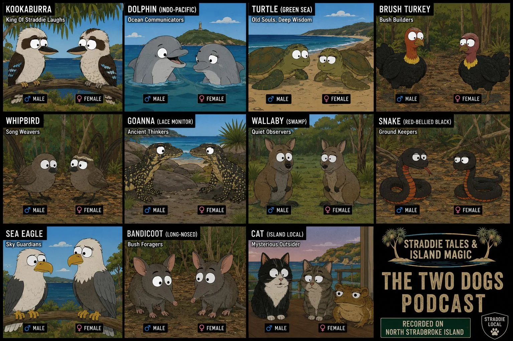
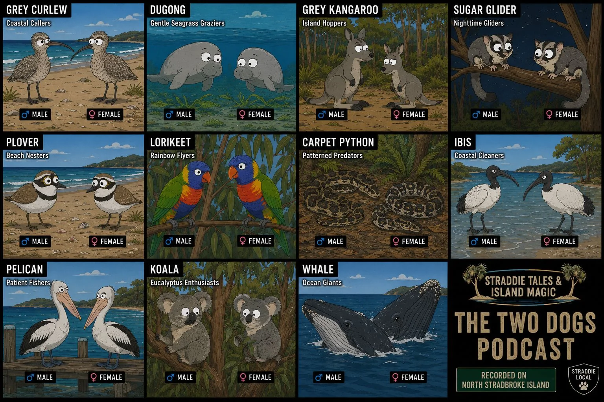
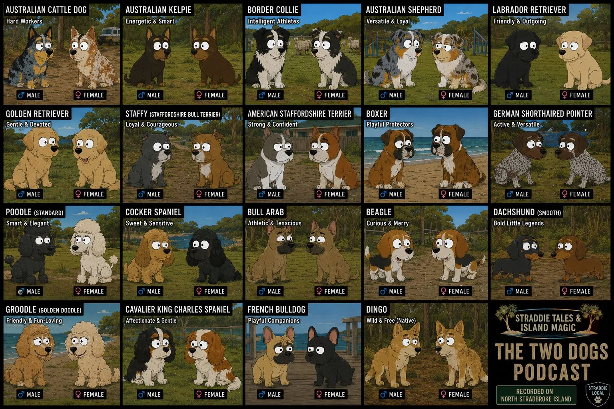
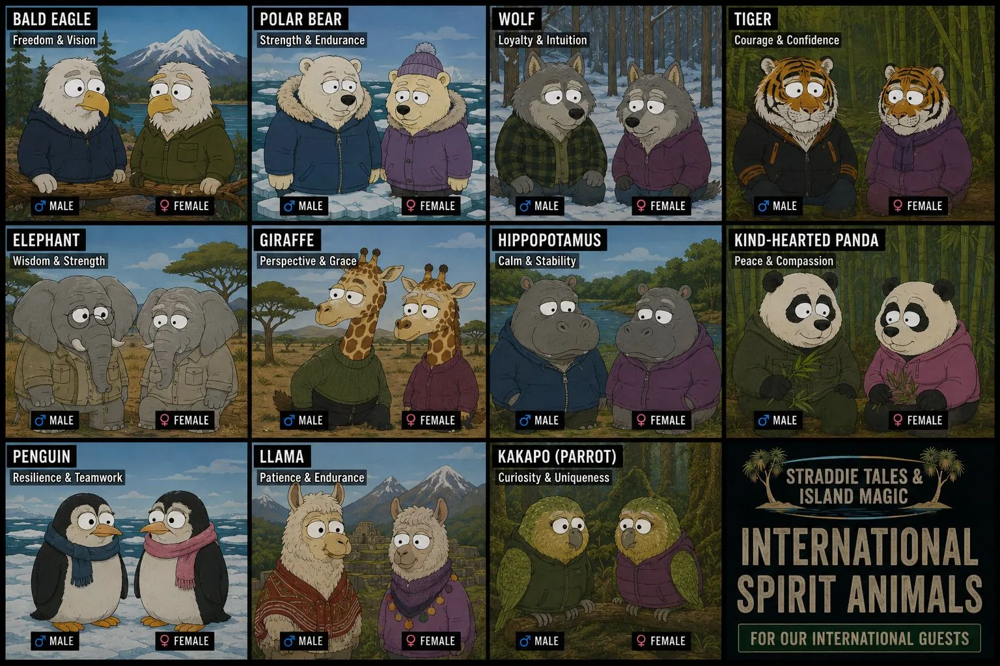
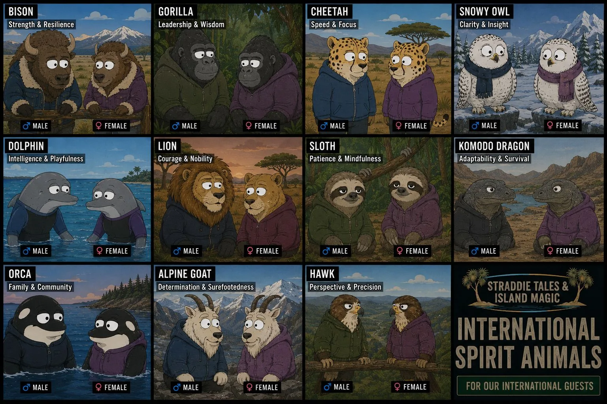

Guest onboarding
Apply, invite, or onboard a guest without choosing their animal for them.
These spirit animal boards are speculative prompts to help people imagine their own character. They are a guide only, not an exclusive list.




